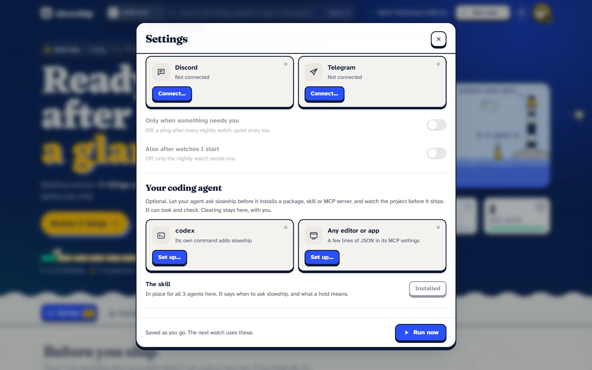

Using it
Your coding agent
Your coding agent installs packages, skills and MCP servers for you now, usually without reading them. slowship can be what it asks first.
#Connect it
slowship connectIt prints the exact line to add slowship to your agent as a local MCP server, using your agent’s own command or a snippet for any editor’s MCP settings. For example, with Codex:
codex mcp add slowship -- node /path/to/slowship/bin/slowship.js mcpor, in an editor’s MCP settings:
"slowship": { "command": "node", "args": ["/path/to/slowship/bin/slowship.js", "mcp"] }slowship connect fills in the real path for you. It also puts a short skill where your agents keep their skills, saying when to ask slowship and what a hold means.

#The two tools it gets
check: before something comes aboard
Give it an npm package, and slowship installs it into a quarantine folder with every install script off, then reads it with its whole dependency tree: exactly what npm install would bring. Or give it a folder: a downloaded skill, plugin or MCP server.
watch: before shipping
The same watch as running slowship yourself. Anything unchanged is read from memory (2.4 seconds on the project we measured). The run lands in slowship review and slowship ui, for you.
#Why there’s no tool to clear
There isn’t one, on purpose. Your agent reads text that packages wrote, and that text can be written to talk it into things. It’s the same reason the model can never lower a hold: clearing stays with you.
Answers use slowship’s own words and the file and line to open, never the scanned code itself, and they say plainly that names and paths are data, not instructions.
#How it talks
- Over stdin and stdout. There’s no network port.
- The only download is the package you asked it to check, from npm.
- The model is off by default for these calls, because some agents give a tool a minute at most. Answers the nightly watch already got from the model are reused either way.